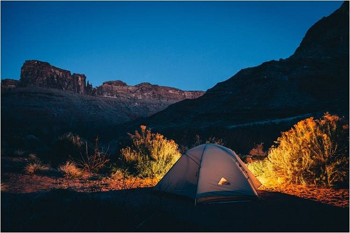

攀登海拔5895米的乞力马扎罗山，虽然不需要任何专业登山技术，但将近6000米的海拔，对我们普通人来说仍然是个挑战。想要降低出现高原反应的几率，除了通过训练增强体质、提前用药（如：Diamox） 、慢慢走以外，方法也很重要。这里我们要介绍的一种方法就是“白走高，晚睡低”。
什么是“白走高，晚睡低”？
“白走高，晚睡低”是一种适应高海拔的方法：登山者在白天爬到相对较高海拔的地区，在那里花上一段时间让身体去感受高海拔的稀薄氧气；晚上，回到相对较低海拔的地区花较多的时间去休息。
白走高，晚睡低的应用
“白走高，晚睡低”是登山公司为了提高登顶成功率普遍采用的方法。它的应用通常分两种：天然的和人为制造的。
1）天然的“白走高，晚睡低”
有些登顶路线的海拔起伏天然就具备“白走高，晚睡低“的条件（如：马莎美、莱莫绍、北麓环线）。选择这样的路线的登山者只需要听从向导的安排，沿着既定的路线爬到高海拔，然后在较低海拔的营地休息，按部就班地走就好了。
2）人为制造的“白走高，晚睡低”
除了上面提到的马莎美、莱莫绍、北麓环线，其它路线都是一路攀升的，并不具备能够“白走高，晚睡低“的条件。这个时候，就要靠我们自己人为地制造机会啦。
登山公司的做法通常是安排登山者在某一个或两个营地多停留一天（根据路线的情况）。在你多停留的那一天或两天的白天，你会被向导带到爬到更高的海拔去（也叫作适应性行走），之后再下山回到海拔相对较低的营地过夜。
最后，记得
如果一个登山公司像“赶鸭子”一样地赶着你向上，这样的公司通常是“黑心”的，请远离；肯花时间让你去“白走高，晚睡低”、让你的身体去充分调整适应的登山公司，通常都是业界良心。